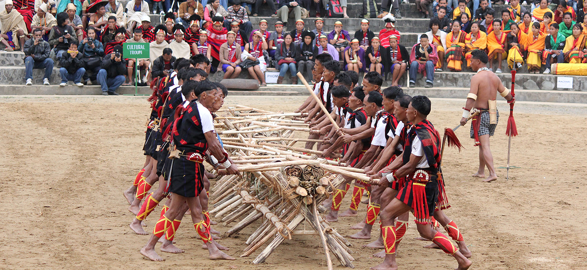
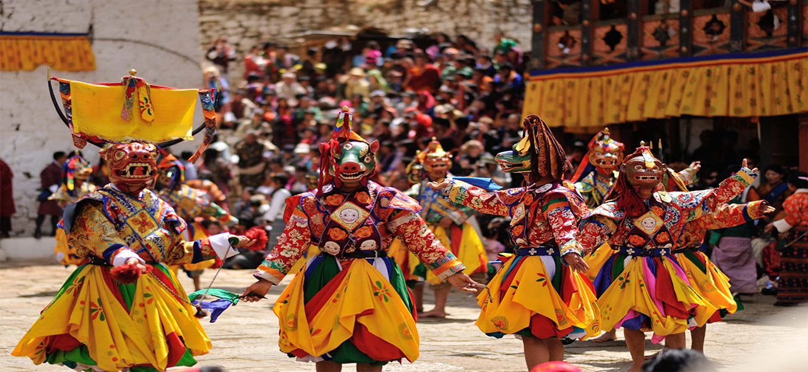
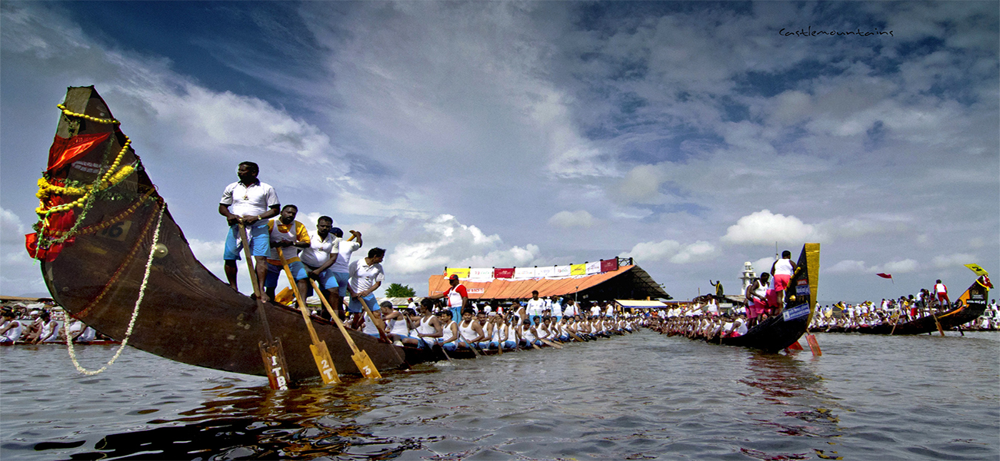
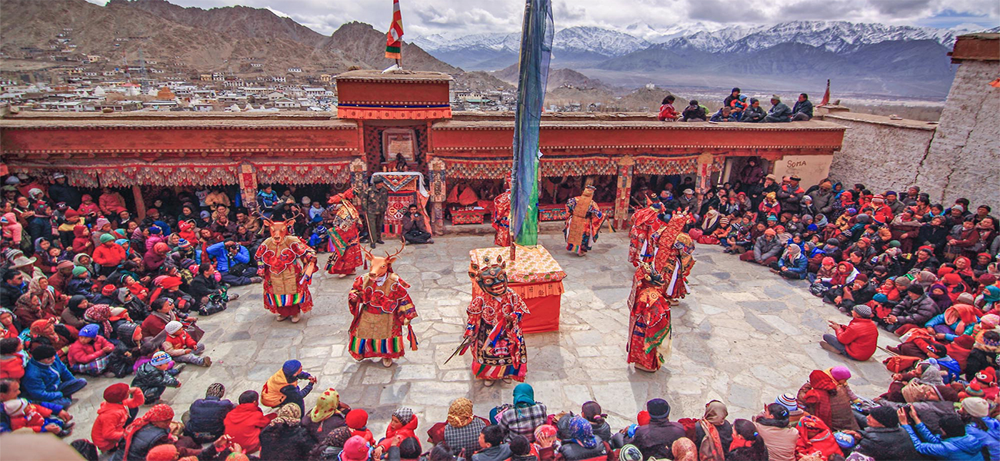

Adventure Tourism
Outdoor adventurous activities are typically undertaken for the purposes of recreation or excitement: examples are adventure racing and adventure tourism. Adventurous activities can also lead to gains in knowledge, such as those undertaken by explorers and pioneers – the British adventurer Jason Lewis, for example, uses adventures to draw global sustainability lessons from living within finite environmental constraints on expeditions to share with schoolchildren. Adventure education intentionally uses challenging experiences for learning.
Trekking
Ladakh track
Garhwal track
Himachal track
Sikkim track
Hours seem like days and each turn comes out with a new challenge, trekking in Indian Himalaya if it is so then why there are several day dreamers backpacking to explore the rugged tracks? The stretch of the Indian Himalaya from Jammu and Kashmir to Arunachal Pradesh brings forth a celestial territoy away from profane clamour to a speckless world of nature where lies towering snowcapped peaks, shifting moraines, crystal blue lakes, untamed rivers, pre historic traces, remote villages and vast ecosphere. The adventure tourism in India unfolds an invigorated world up in the Himalaya from the Great Lakes in Kashmir to the oldest monastery in India in Arunachal Pradesh. Thus trekking tours in India over the years has gained its importance right from the ancient rock arts in Ladakh region reflecting the Iron Age secluded within the rugged highland and abode of Dalai Lama and remote life style of the Indo-Tibetans in Himachal Pradesh to the fusion of myths, history, nature, religion and culture of Garhwal and Kumaon region in Uttaranchal and vast ecosphere from North Bengal to Sikkim.
skiing
Gulmarg
Uttrakand
Kasmir
Auli
India, the land encompassing majestic Himalayas, is a paramount destination for Skiing lovers throughout the globe. India is bestowed with lots of destination that are perfect for carrying out skiing. For instance, the fascinating region of Gulmarg in Jammu and Kashmir is the paradise for all the skiing enthusiasts. Many other places in this country have also emerged as the great destination for skiing. Manali, Kufri, Auli and Narkanda are some of the awe-inspiring places that are gaining rapid repute for the peerless gradients thus offering a pleasing skiing tour.
River Rafting
Rishikesh
Ladakh
Karnatka
Darjeeling
No other jubilation can be compared to that of gushing through the river rapids on a raft. The turbulent waters of ferocious rivers make the tourists taste an adrenaline rush like never before. India, endowed with the radiant rivers flowing down from the high altitudes of imposing Himalayan Range, can be counted among the best destinations for river rafting in blue planet. There are myriad destinations, which serve as a haven for rafting freaks such as Rishikesh, Zanskar, Ladakh, Sikkim, Darjeeling, etc. On the contrary, the major rivers rendering a perfect rafting expedition are Ganges, Alaknanda, Satluj, Brahmaputra, Indus, Tons, Sharda, Teesta, Zanskar, Bhagirathi, and Barapole.
Camel Safari
Jaisalmer
Pushkar
Ladakh
Bikaner
Deserts have since long exerted an irresistible charm on the psyche of the humans, the landscape inspiring different emotions in different people. And what better way to explore this magical realm than on a camel back, for a camel safari is one of the most adventurous of experiences, and indeed a novel way to 'discover' the desert.
Camel safaris trace their origins to the time of trade between India and China, when camel caravans would journey along established trade routes laden with spices and herbs and jewels. They provide an opportunity to get a glimpse of traditional Indian life in the desert, with all the hardships, the beauty and the desolation.
The accommodation on the way consists of primitive thatched mud huts, and the way of life though hospitabilty is entirely ethnic.
Camel safaris generally cover the area around Jaisalmer, Bikaner or Jodhpur, popularly known as the desert circuit. The duration can vary between one day and two weeks. Big towns are not usually on the route though there is no definite route that you have to adopt. Route navigation in the desert is an acquired art, and caravans must be manned by riders who not only know how to study the stars, but also recognise the shifting sands of the terrain.
Camel Safari Tips
There are certain other factor that you should keep in mind while travelling the desert region of Rajasthan on a Camel back.If you are looking for a desert safari the folowing thing you must checked prior leaving to Safari.
Clothes & Dress : The weather in desert is extreme hot its better to cover your whole body with clothes(Light Cotton Clothes).The Dress should modest because of the proximity of safari to the village.
Water : One Must Carry enough water to avoid any Problem of dehydration.
Jeep Safari
Ranthembor
Sikkim
Ladakh
Nainital
There are so many safari options in India; you may never know what is happening next. Like camels and horse safaris, another famous yet the most common form to encompass the beauty of India is jeep safari. The Jeep Safari not only refreshes and revitalizes but one feels close to nature while driving through the quiet and beautiful countryside. From the point of view of people, jeep safari is the best way to face the adventure as you can pass through rugged trails, challenging terrains, also you can stop wherever you want.
Favorite destinations for adventure enthusiasts to indulge in Jeep Safari in India are Ladakh, Dharamshala, Lahaul, Spiti, Uttrakhand, Sikkim and Rajasthan. The average daily move is about 150 km, approximately five to six hours of jeep driving. By the time sun sets, the travelers can spend the night at ease in a hotel or resort room.
Some Unique Festivals & Events in India
Aoling Festival of the Konyak Headhunters

Where: Mon district, Nagaland
When: April
While the more famous Hornbill Festival sees a larger confluence of Nagaland’s many flamboyant tribes, it’s a show mainly for the benefit of tourists. The Aoling tribal festival is more authentic, and gives you a true taste of Konyak, an erstwhile headhunter clan. This is their celebration welcoming Spring, and offering prayers for a good harvest. This is a fantastic opportunity to spend time with the otherwise hard-to-engage with Konyaks; already a diminishing tribe. They have elaborate tattoos inked on their bodies and faces in particular.
While you are there: Visit Longwa, a unique village on the Indo-Burma border where half the houses are Indian and the other half, Burmese. The village chief’s house is particularly delightful, given that the international border runs right down the middle.
The Mask Dances of Hemis

Where: Hemis, Ladakh
When: June – July
Sandwiched between gigantic cliffs skirting the edge of Hemis National Park in Ladakh, the 17th century Hemis monastery, is at once magical and imposing beneath the jagged peaks. Each year the charm grows manifold when it plays host to one of the biggest and most popular festivals of Ladakh – the Hemis Festival. Celebrated in honor of Guru Rinpoche Padmasambhava (one of the founders of Tibetan Buddhism), the traditional music and the mask dances, or Chams, performed in the monastery courtyard are a spectacle. Complete with sound and visual effects, from the large drums and the long copper trumpets. Do keep in mind that the festival is naturally very popular, so be prepared to be pushed and shoved.
While you are there: Also make time for spotting the ancient rock paintings, petroglyphs created 2000 to 4000 years ago in the nearby Dah Hanu and Batalik region. Few paintings are carefully preserved in the Domkhar Rock Art Sanctuary even as many are vandalized due to ignorance.
If you’re there for a week or more, you can hike on the popular Markha Valley and camp at friendly villages in homestays along the trail.
Nehru Boat Race

Where: Allapuzha, Kerala
When: August
One of the most popular boat races in Kerala, Nehru Boat Race, on the serene waters of Punnamada Lake, draws huge crowds from across the country. Witness hundreds of men working in clockwork-like unison to paddle 100-feet long canoes – Chundan Vallam (most of us know them as snake boats) – along a 1.4 kilometer long course. Several Vallam Kali (boat games) events happen across the state during autumn as part of the harvest festival. The Nehru Boat Race has carved a space for itself since its inception in 1952 when it started as a welcoming event for Nehru, the then Prime Minister of India, and later morphed into a race.
While you are there: Steal a quick trip to the palm fringed backwaters of Kuttanad that’s not only famous for its verdant rice fields but also for being 2.2 meters below sea level, a geological peculiarity
Losar in Ladakh

Where: Ladakh, Jammu & Kashmir
When: February
In the stark winters of Ladakh when an eerie silence falls upon the roof of the world, the Cham songs and dances of Losar add a new spunk of colour to the barren landscape. Witnessing the mask dances in the backdrop of snow-covered mountains in bone-chilling cold might not be everyone’s cup of tea but the Tibetan new year celebrations in Ladakh’s gompas (monasteries) offer the intrepid explorers a rare glimpse into the ancient rituals and traditions unfettered by the ills of mass commercialization.
While you are there: Try walking on the famous Chadar that will soon become stuff of past either due to climate change or completion of the road to Zanskar.